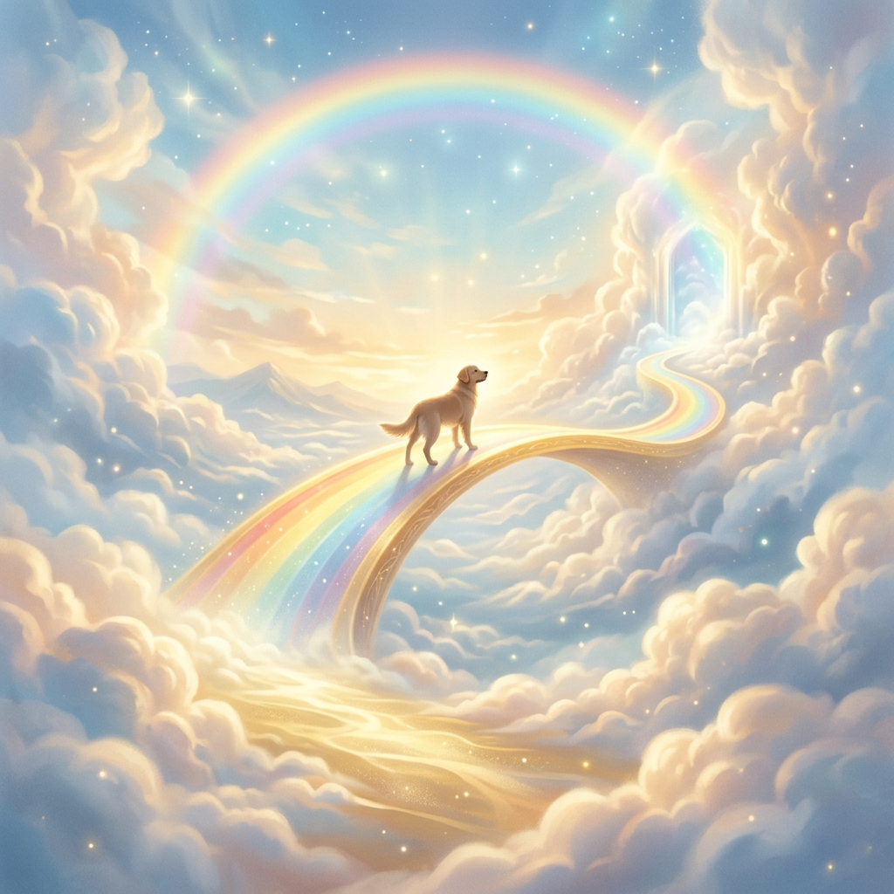
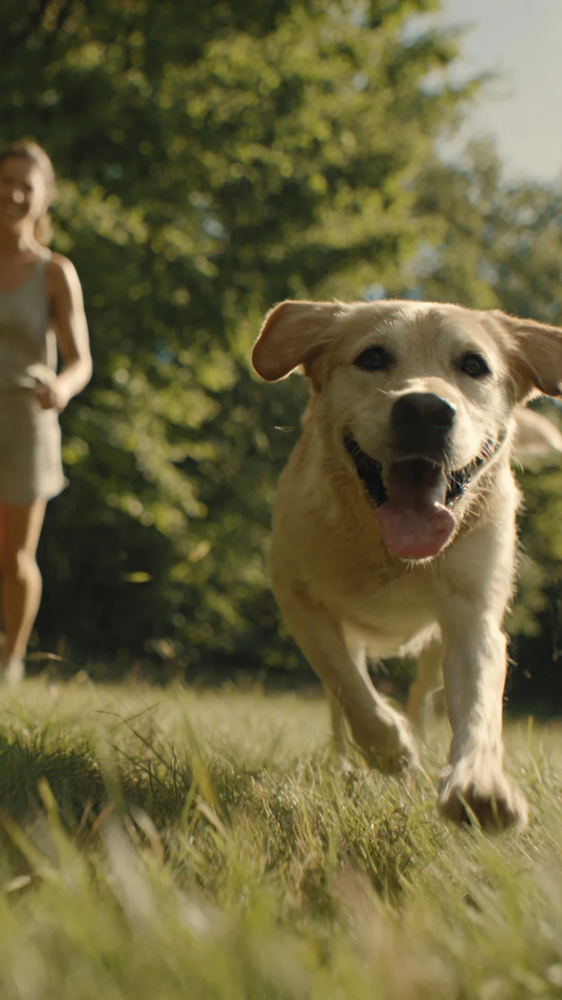
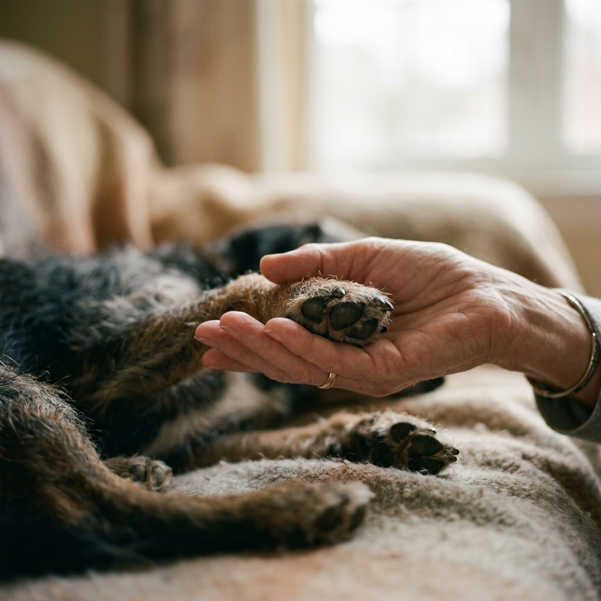

Sabemos lo difícil que es decir adiós. En Garritas al Cielo te acompañamos con respeto, dignidad y amor en la despedida de tu compañero fiel.


Somos una empresa de Calama dedicada a brindar servicios de cremación de mascotas con el más alto estándar de profesionalismo y calidez humana.
Estamos donde nos necesites.
Recuerdos para siempre.
Te ofrecemos acompañamiento integral para que ese momento de despedida sea lo más tranquilo posible.
Proceso individual o colectivo realizado con absoluta transparencia y respeto.
Servicio dedicado de traslado y recuperación respetuosa de restos de mascotas.
Acompañamiento profesional y humano para una transición en paz y sin dolor.
Variedad de urnas y productos para mantener viva la memoria de tu compañero.
Acompañar a las familias en su duelo es nuestra misión más importante. Estas son algunas de sus historias.
"No es fácil despedirse de un compañero de tantos años, pero en Garritas al Cielo encontré respeto y mucha humanidad. Desde el retiro en mi casa hasta la entrega de las cenizas, todo fue muy transparente y delicado. Me enviaron fotos del proceso y eso me dio mucha tranquilidad. Se nota que aman lo que hacen."
"Agradezco profundamente el cariño con el que trataron a mi gatita. La ceremonia de despedida fue muy bonita, íntima y respetuosa. La ánfora ecológica y la fotografía que entregan son detalles que realmente ayudan a sanar. Lo recomiendo totalmente."
"Un servicio muy profesional. Me explicaron todo paso a paso y cumplieron con cada detalle. Incluso el certificado de cremación y la placa con su nombre fueron más de lo que esperaba. Se agradece la seriedad en momentos tan difíciles."
"Excelente atención desde el primer contacto. Fueron rápidos, respetuosos y muy claros. El video opcional del proceso me dio mucha paz porque pude ver que todo se hizo correctamente. Recomiendo Garritas al Cielo a cualquier persona que quiera despedir bien a su mascota."